DISEÑO

DISEÑO EXTERIOR
El Civic Advanced Hybrid cuenta con nuevo disenio, moderno y refinado con lineas llamativas que le aportan sofisticacion y modernidad en todos sus detalles.

DISEÑO FRONTAL
El nuevo Civic Advanced Hybrid presenta una parrilla frontal recta y un capot mas bajo y plano que en versiones anteriores, potenciando su estetica deportiva y a su vez mejorando la visibilidad del conductor. Logo distintivo de Honda, donde se aprecia el color azul caracteristico del vehiculo hibrido con la exclusiva tecnologia e:HEV de la marca.

OPTICAS FULL LED
El Civic Advanced Hybrid esta equipado con elegantes opticas full LED y sensor crepuscular para encendido automatico de luz baja, ajuste de altura y apagado automatico. El sistema de luces automaticas ajusta la posicion de los faros delanteros para que puedas concentrarte en la conduccion, ademas cuenta con faros delanteros antinieblas FULL LED.

FAROS TRASEROS FULL LED
Los faros traseros con luces LED resaltan aun mas el aspecto tecnologico del Civic Advanced Hybrid. Proporcionan excelente luminosidad, garantizando buena visibilidad a distancia.

LLANTAS DE ALEACION 17
Con detalles bi-tono que garantizan un aspecto imponente, elegante y unico.

ANTENA ESTILO TIBURON
Le aporta sofisticacion al disenio.

DETALLES QUE COMPLACEN A TODOS LOS OCUPANTES
El interior del Civic Advanced Hybrid presenta un disenio minimalista y refinado con detalles en panel de abejas,en el cual cada superficie, contorno y caracteristica, fue pensada para crear una experiencia de calidad y terminacion superior para el conductor y todos los pasajeros.

ASIENTOS CONFORTABLES
Asientos ergonomicos tapizados en cuero ecologico de alta calidad que garantizan un mayor confort y sofisticacion.

APOYABRAZOS TRASERO CON APOYAVASOS
Adicionalmente al apoyabrazos delantero, el Civic Advanced Hybrid incluye apoyabrazos en los asientos traseros con porta vasos incluidos.

BAUL
Amplio baul de 495 litros. Distribucion eficiente del espacio multiproposito tanto para uso cotidiano como para viajes largos

SISTEMA 60/40
Asientos traseros rebatibles y plegables 60/40 que amplian el espacio del baul a 1643 litros.

TECHO SOLAR
El Civic Advanced Hybrid cuenta con techo solar corredizo electrico one-touch de 3 posiciones y anti-pinzamiento para disfrutar de la luz natural y brisa fresca de los paisajes.

DETALLES DEL INTERIOR
El Civic Advanced Hybrid cuenta con volante y palanca de cambios revestidos en cuero ecologico.
❮
❯
TECNOLOGIA
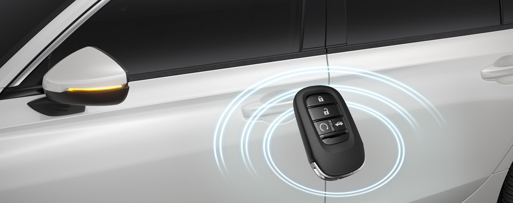
SMART ENTRY
El Civic Advanced Hybrid cuenta con un sistema de acceso inteligente sin llave (Smart Entry Keyless) y con encedido remoto del motor.
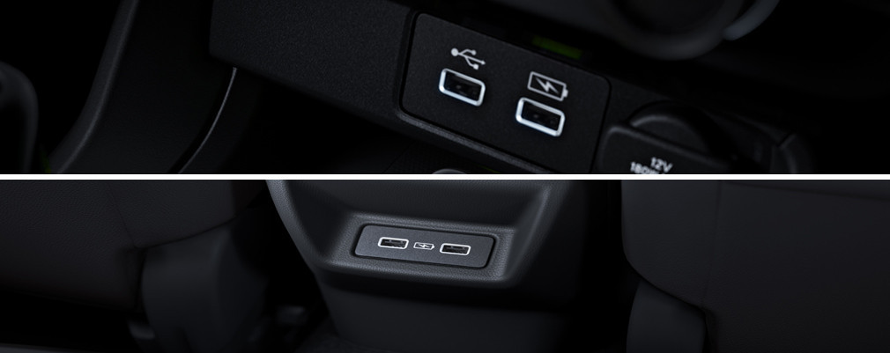
PUERTOS USB
Se incorporan puertos USB delanteros (2) y traseros (2) iluminados, de carga rapida y facil acceso.
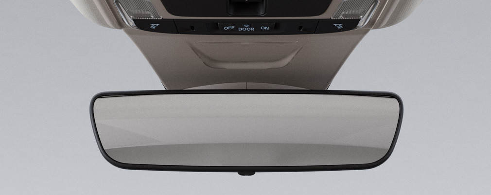
ESPEJO RETROVISOR ANTI ENCANDILAMIENTO
Al recibir la incidencia de la luz alta de otros vehiculos se oscurece en forma automatica para evitar encandilamiento.
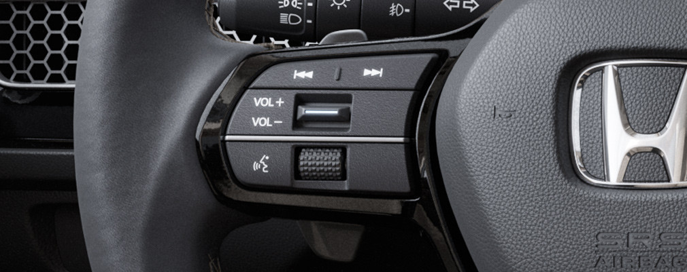
MANOS LIBRES
Comandos de audio para ajustar el volumen y HFT (Hands-Free Telephone) que permiten mantener las manos en el volante durante el manejo, aumentando la seguridad.Con HFT, se puede enlazar el smartphone con el sistema de audio para hacer y recibir llamadas telefonicas.
BOTON DE ARRANQUE
El motor puede arrancar simplemente presionando el boton, requiriendo solo la presencia de las llaves.
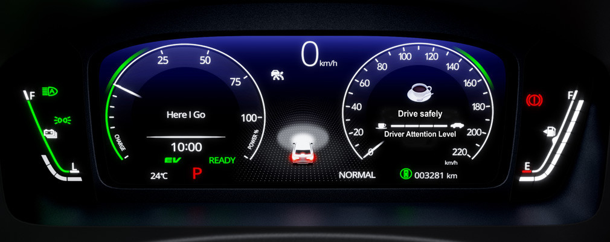
DRIVER ATENTION LEVEL
El sistema Driver Attention Level va calificando el manejo del conductor y de acuerdo a eso le dispara avisos sobre su nivel de atencion a la pantalla del instrumental central (por ejemplo, si es que el conductor se va quedando dormido).
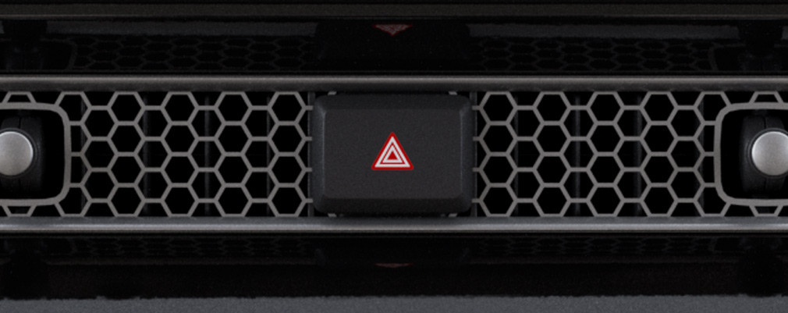
BALIZAS AUTOMATICAS
Sistema de seguridad que ante una frenada de emergencia activa la senial de balizas de emergencia automatico (ESS).
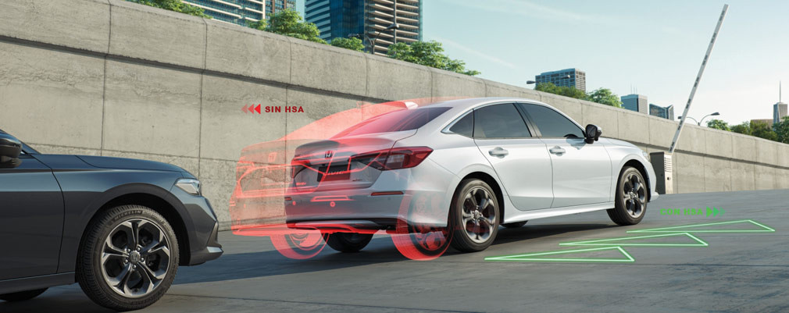
ASISTENCIA PARRA ARARNQUE EN PENDIENTES
La version Civic Advanced Hybrid mantiene el conocido sistema para arranque en pendientes (HSA).
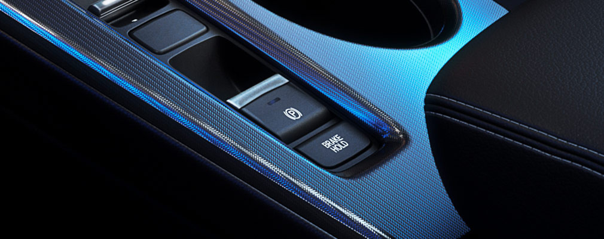
BRAKE HOLD
El sistema EPB o freno de estacionamiento electrico suma comodidad al conducir y puede activarse con un simple toque. La funcion Brake-Hold mantiene el vehiculo totalmente parado, en cualquier terreno o inclinacion, hasta tocar el pedal del acelerador.
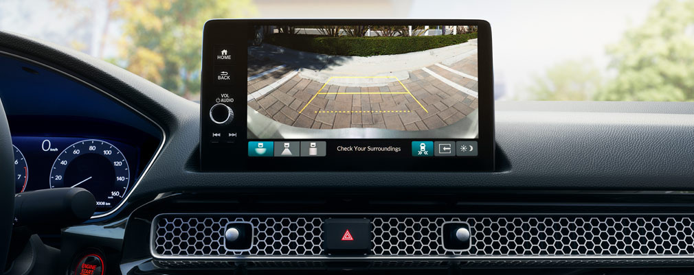
CAMARA DE VISION TRASERA CON ANGULOS MULTIPLES
El Civic Advanced Hybrid cuenta con una camara de vision trasera de 3 angulos con guias dinamicas de direccion. Los diferentes puntos de visualizacion facilitan la conduccion a la hora de maniobrar o estacionar en espacios limitados.
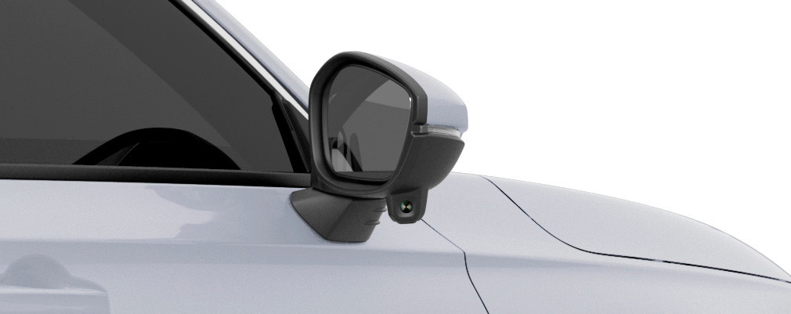
LANEWATCH
El Civic Advanced Hybrid cuenta con un sistema de reduccion de punto ciego. Muestra en la pantalla el carril del lado derecho del vehiculo gracias a una camara ubicada en el espejo retrovisor externo, dando una vision 4 veces mas amplia.
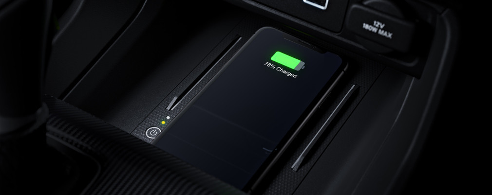
CARGADOR INALAMBRICO
El Civic Advanced Hybrid cuenta con un cargador inalambrico (Wireless Charger).
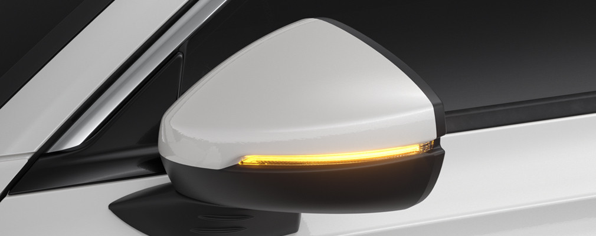
ESPEJOS RETROVISORES ELECTRICOS
El Civic Advanced Hybrid incorpora espejos retrovisores laterales con luz de giro plegables electricamente.
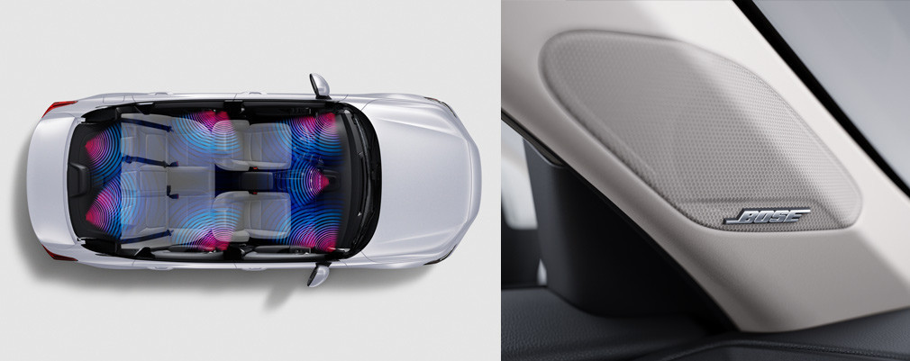
SISTEMA DE AUDIO PREMIUM
El Civic Advanced Hybrid incorpora un sistema de audio de 8 parlantes + 4 tweeters + subwoofer (BOSE).
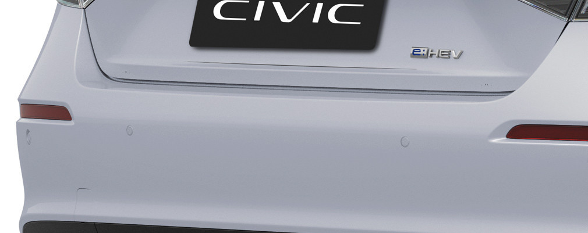
SENSORES DE ESTACIONAMIENTO
Los sensores de estacionamiento delanteros (4) y traseros (4), alertan al acercarse a un objeto detectado, facilitando las maniobras de estacionamiento.
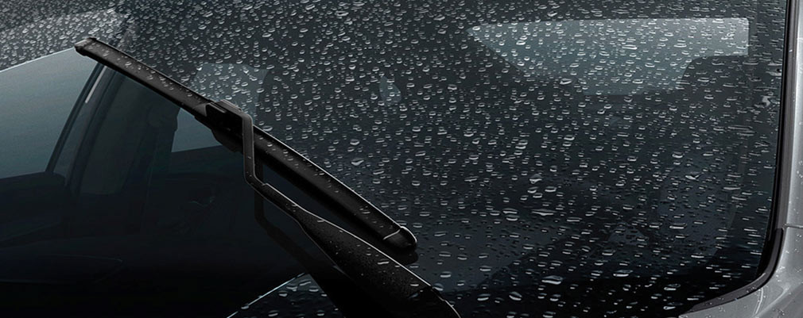
SENSOR DE LLUVIA
Incorpora un sensor de lluvia para activar automaticamente el limpiaparabrisas intermitente de velocidad variable, con spray rociador incluido en sus brazos para nunca perder la vision mientras se activa la limpieza.
.jpg)
MODOS DE CONDUCCION
El Civic Advanced Hybrid ofrece 3 modos de conduccion: Normal + Sport + Econ. Ademas de una mayor sostenibilidad, la exclusiva tecnologia e:HEV del nuevo Civic Advanced Hybrid ofrece mucha mas eficiencia y potencia.
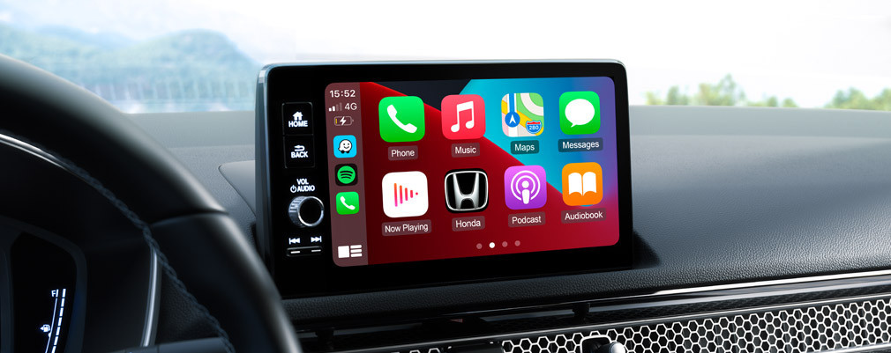
PANTALLA MULTIMEDIA
La pantalla multimedia tactil de 9 pulgadas de alta resolucion con excelente nitidez y sistema touch screen compatible con plataformas Apple CarPlayTM(Cable/Inalambrico) y Google Android Auto TM (Cable/Inalambrico).
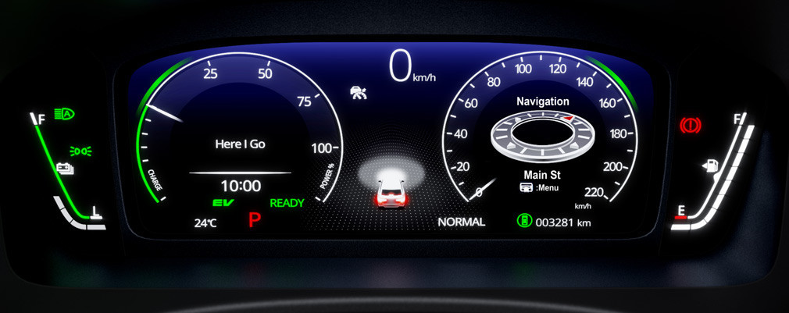
PANEL DE INSTRUMENTOS
Nuevo panel digital TFT (Thin Film Transistor) de alta resolucion de 10,2 pulgadas, que ofrece una completa informacion de la computadora a bordo con la posibilidad de hacer configuraciones de distintos modos de sistema multimedia (recordatorio de cinturones delanteros y traseros, entre otros) y Honda Sensing. Ahora con la representacion del vehiculo en 3D que muestra todas las funciones (freno, luces, giro, etc).
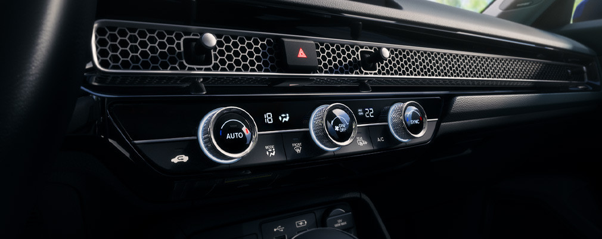
CLIMATIZADOR AUTOMATICO
Climatizador digital (dual-zone) con ajuste automatico de temperatura.
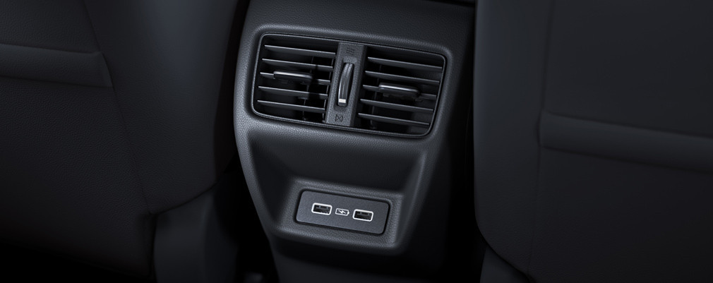
VENTILACION DE AIRE ACONDICIONADO TRASERO
Ventilacion que permite regular el aire acondicionado en las plazas traseras.
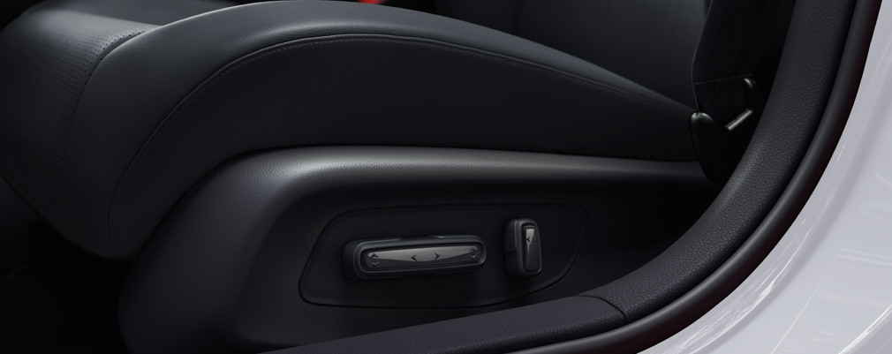
BUTACA ELECTRICA
El Civic Advanced Hybrid cuenta con asiento de conductor y acompaniante con ajustes electricos de 8 posiciones para configurar facilmente la posicion perfecta.
SEGURIDAD
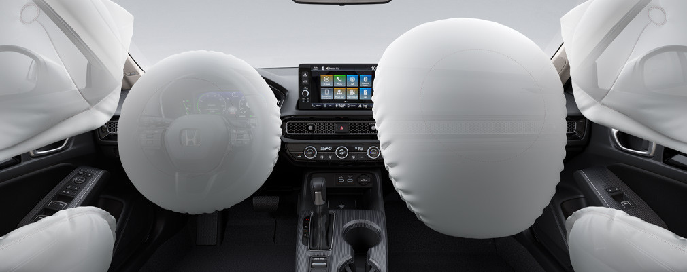
PROTEGE LO QUE MAS QUERES
El Civic Advanced Hybrid esta equipado con un completo sistema de 8 airbags; delanteros SRS (2), laterales (2), laterales tipo cortina (2) y laterales para pasajeros de segunda fila (2). Cuenta con asientos con anclajes ISOFIX (en asientos traseros), sistema estabilizador del vehiculo (VSA), con control de traccion y estabilidad, sistema AHA (Vehicle Handling Assist o Asistente de Conduccion Agil) y sistema de monitoreo de la presion de los neumaticos (TPMS).
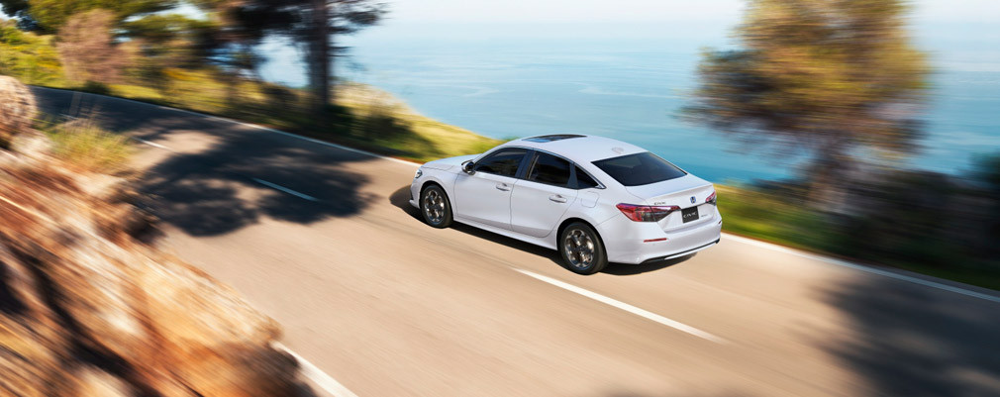
FRENOS CON SISTEMAS ABS Y EBD
El Civic Advanced Hybrid tiene frenos a disco en las 4 ruedas con tecnologia ABS (Sistema de frenos antibloqueo) y EBD (Distribucion electronica de frenos) para un mejor control y eficiencia de frenado en situaciones de emergencia.
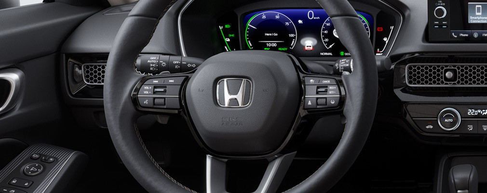
DIRECCION ELECTRONICA PROGRESIVA
Otorga un maximo control de conduccion: direccion mas firme a velocidades mas altas, para mejorar la seguridad, y conduccion mas suave a velocidades mas bajas, facilitando las maniobras.
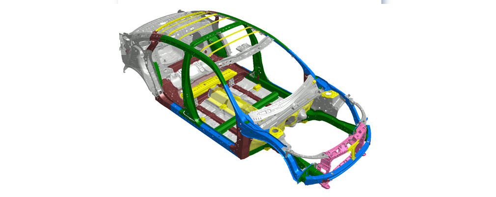
ESTRUCTURA DE CARROCERIA
El Civic Advanced Hybrid cuenta con una estructura de la carroceria con ingenieria de compatibilidad avanzada (ACE) desarrollada con acero de alta resistencia. Esta estructura dispersa la energia en caso de un impacto frontal para aumentar la proteccion de los ocupantes.
HONDA SENSING
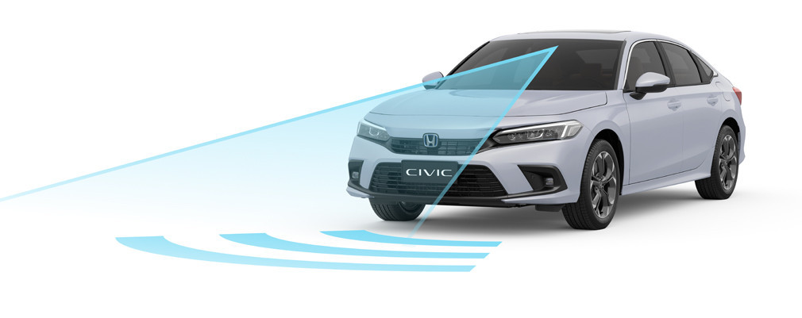
HONDA SENSING
Honda Sensing esta compuesto por una camara y un radar que trabaja en conjunto con sensores que realizan una lectura permanente de las situaciones y las condiciones del trafico que brindan las siguientes funciones: control de velocidad crucero adaptativom (ACC) con seguimiento a baja velocidad (LSF), un sistema de frenado con mitigacion de colision (CMBS); sistema de asiatencia para mantenerse en el carril (LKAS); sistema de mitigacion de salida de carril (RDM); y sistema de luces altas automaticas (AHB).
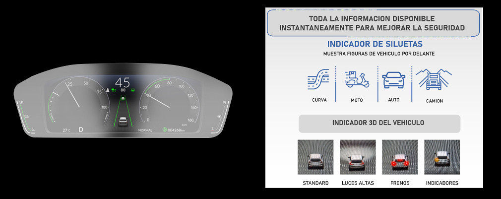
HONDA SENSING EVOLUCIONADO
Cuenta con una nueva representacion del vehiculo en 3D que muestra todas las funciones (freno, luces, giro, etc.). Asi como tambien se puede visualizar perfectamente curvas, motos, autos y camiones.
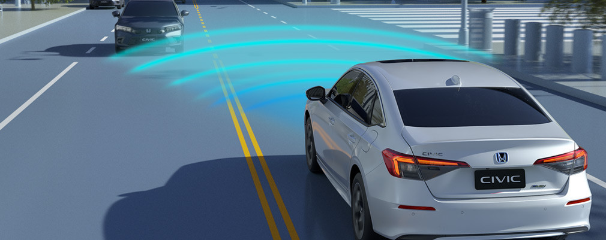
SISTEMA DE FRENADO CON MITIGACION DE COLISION (CMBS)
Si continua acercandose al vehiculo que tiene adelante, el sistema (CMBS) aplica automaticamente el freno.
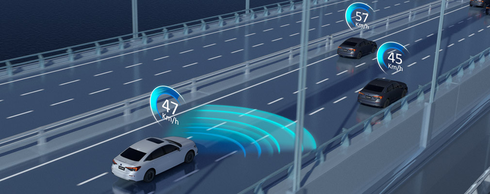
CONTROL DE VELOCIDAD CRUCERO ADAPTATIVO (ACC)
Mantiene la distancia establecida ajustando la velocidada de seguimiento detras de vehiculos detectados.
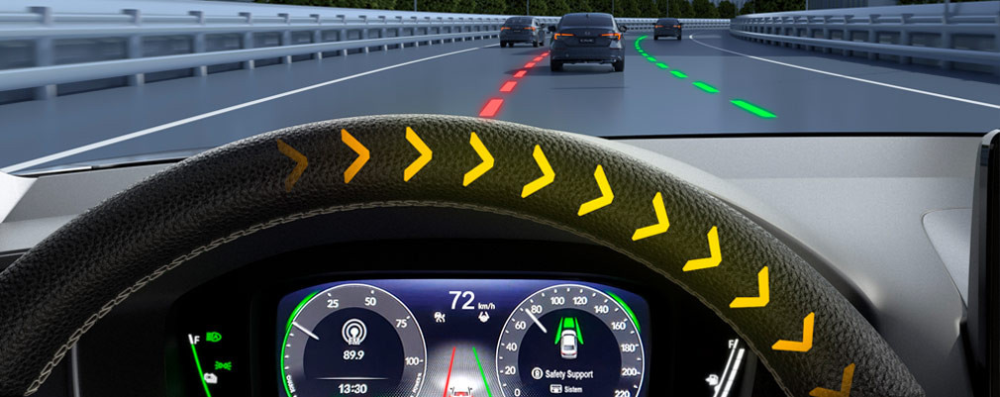
SISTEMA DE ASISTENCIA PARA MANTENERSE EN EL CARRIL (LKAS)
Este sistema ayuda a mantener el vehiculo dentro del carril demarcado a partir de los 70 km/h. Puede corregir levemente la trayectoria aplicando un giro correctivo para ayudar al conductor a mantenerse entre las lineas correctas.
SISTEMA DE ADVERTENCIA DE COLISION FRONTAL (FWC)
Este sistema tomara nota de la distancia con el vehiculo que tiene por delante. Si se acerca demasiado, el sistema alertara con vibraciones en el volante y sonido.
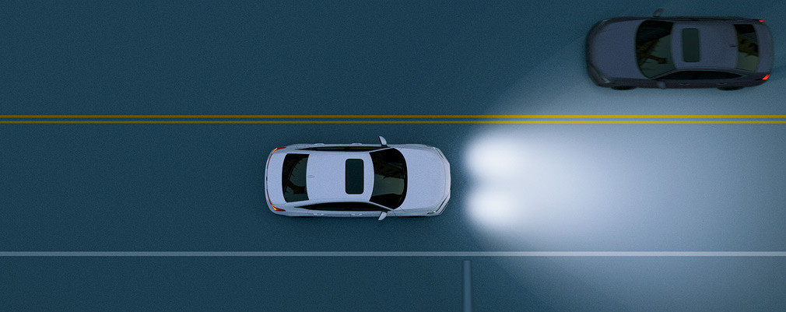
LUCES ALTAS AUTOMATICAS
Regula la intensidad y distancia de las luces dependiendo de los vehiculos que se detecten en sentido contrario, para evitar encandilamientos a los demas conductores.
MOTORES Y TRACCION
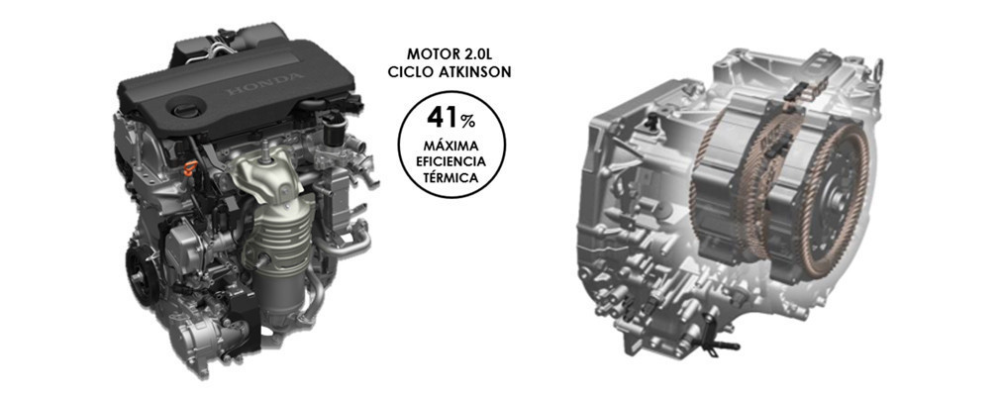
MOTORES
El concepto e:HEV se basa en la eficiencia y simplicidad de utilizar un motor electrico potente para traccionar las ruedas auxiliado por un motor de combustion Atkinson eficiente y de bajo consumo. Motor de combustion Atkinson de 2.0 litros 2.0 L DOHC VTEC 141 CV 16V con inyeccion directa, capaz de desarrollar 141 caballos de fuerza a 6.000 RPM & 18.6kgf.m a 4500 rpm de torque. Motor electrico capaz de desarrollar 184,5 caballos de fuerza a 5000 - 6000 rpm & 34,1 kgf.m de 0 - 2000 rpm de torque.
TRACCION
La motorizacion esta asociada a una transmision electrica inteligente con modo Normal, Sport, Econ. Paddle shift al volante (control de regeneracion de energia). Sistema de traccion 2WD (delantera).
❮
❯
E:HEV
Modo Electrico
Vive la experiencia completa de un vehiculo 100% electrico, con una potencia sorprendente y un torque instantaneo, impulsado por baterias de tecnologia avanzada
Modo Hibrido
En este modo, a traves de la tecnologia e:HEV el motor de combustion actua como un generador de energia para el motor electrico, manteniendo la traccion 100% electrica.
Modo Combustion
Solo en situaciones de velocidad crucero alta, el motor de combustion se activa para traccionar las ruedas. De manera de garantizar una mayor eficiencia y un bajo consumo de combustible.
Modo Regeneracion
En el sistema e:HEV, gestiona de manera inteligente la energia generada durante el frenado e incluso en el movimiento, para recargar las baterias automaticamente sin preocupaciones.
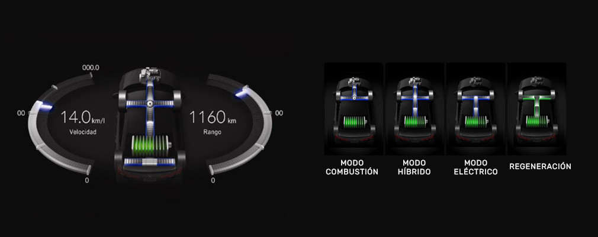
Flujo de Potencia
Indica el modo de traccion (electrico/combustion/hibrido). El flujo cambia en tiempo real en funcion del estado de conduccion